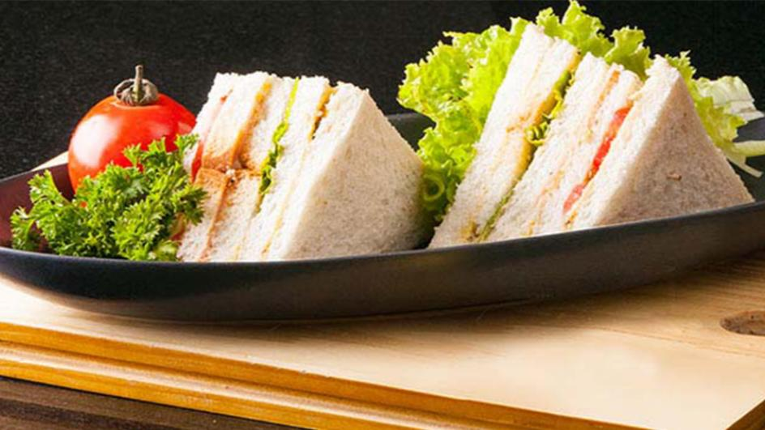
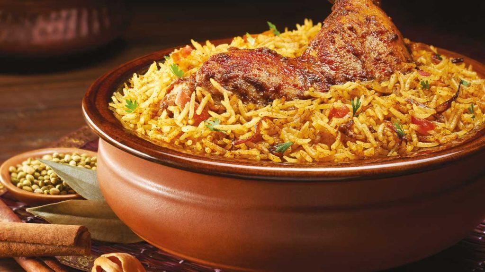
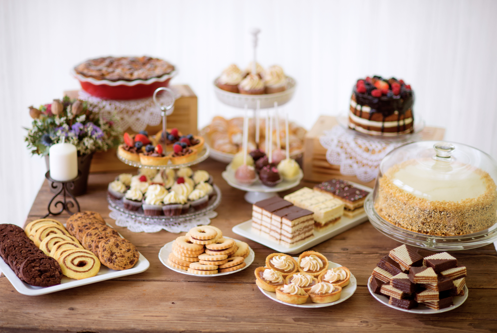

Hotel Greenery
Our History
- We started our journey drawing inspiration from our country’s most valuable spice, cinnamon. Just like its pleasant flavour and warm aroma, we infuse a rejuvenating spirit into every experience the world discovers with us. Today, with each property we present a new Sri Lanka that houses a contemporary outlook and a genial atmosphere. Together, they put us on the world map beyond the boundaries of hospitality. They make us a group passionate about living the true essence of each moment.
The duties of conscientious Governorship soon took their toll on King Tom, however, and poor health forced him to leave the island of Ceylon and his adored Lovina. The Governor, an honourable man, who wanted to do the very best for Lovina within the social mores of the time, presented her with a parting gift: a large piece of land in Attidiya, a village some distance away from Galkissa. Although the departure of King Tom was to naturally seal the end of their love affair, Lovina’s name is remembered as providing the inspiration in naming the Governor’s house. Indeed, it is believed that her descendants still live in the vicinity of Mount Lavinia. The legend is the story of Lovina, how she fervently held the attention, and captured the heart of a distinguished British Governor of Ceylon.
ATo this day, the secret tunnel remains, keeping alive the memory and spirit of the beautiful mestizo dancer, elevated in the popular imagination to ”Lady Lavinia”. .
Facilities available
Hotel Facilities & Guest Service:
Hotel Facilities:-
Spa,
Semi open & outdoor restaurant,
Poolside bar,
Car parking,
Swimming pool/ Jacuzzi,
Public computer,
Disable rooms & Interconnecting rooms,
24 Hour security,
Outside catering service,
100 Seating capacity restaurant,
150 Capacity outdoor terrace,
45 Seating conference room,
35 Seating private air-conditioning dining room,
Water purification system,
Sunset boat trip and
Gift shop
Guest Service:-
24-Hour room service,
Free wireless internet access,
Complimentary use of hotel bicycle,
Laundry service,
Tour & excursions,
24 Hour concierge,
Meeting facilities,
E-Bike & horse cart rental,
Airport transfers,
Babysitting on request and
24-Hour doctor on call
About Dining :
Continental breakfast, English breakfast, American breakfast, and Indian breakfast are available here
All type of Foods and Drings are available in different prices.
Time:
- Breakfast:
- Lunch:
- Beverages and Tea,Coffee
- Dinner:
- Deserts
- Available from 7.00 a.m
- Available from 12.00 p.m
- Available from 3.00 pm
- Available From 7.00 p.m
- Available From 8.00 p.m
About Food Items:
You can have all delicious foods completely around a natural environment.

Break fast- SandWich, Eggs,
French toast, waffles, or pancakes (try wheat or whole-grain varieties)
cold cereal and milk.
hot cereal, such as oatmeal or cream of wheat
(try some dried fruit or nuts on top)
whole-grain toast, bagel, or English muffin with cheese.
yogurt with fruit or nuts.

Lunch −Lunch is served specially using natural utnsils.
Peas pulao with carrot raita.
Moong dal khichdi.
Lemon rice.
Methi parantha with onion chutney and greens.
Rice, sambhar and curd.
Red kidney beans or rajma.
Pasta salad.
Masala poha.

Beverages and Tea Coffee− Soft drinks, natural fruit juices(Cranberry).
Tart and bright red, cranberry juice offers many benefits.
Tomato. Tomato juice is not only a
key ingredient in Bloody Marys but also enjoyed on its own as a delicious and healthy drink.
Beet.
Apple.
Pomegranate.
Acai berry
Orange.), variety of coffee items(Arabica). Arabica is the
most popular type of coffee, hands down.
Robusta. While Arabica is the most popular,
Robusta is cheaper and stronger. ...
Black. Black coffee is as simple as it gets with ground coffee
beans steeped in hot water, served warm.
Latte.
Cappuccino.
Americano
Espresso.
Doppio)

Dinner − Variety of different country foods are available.
Hard tacos or tostadas,
Huevos rancheros,
Stir fry,
Burritos,
Fajitas,
Burgers or hotdogs,
Quesadillas (plain cheese, steak, chicken, or pork)
Meatballs and rice.

Deserts − Variety of Deserts Available
Biscuits, cakes, tarts, cookies, sandeshs, gelatins, ice creams,
pastries, pies, puddings, custards, sweet soups, etc. On Sundays, special chocolate lava cake is available.
Our Details
Contact No:- 021-227-2848
Email Address:- hotel_greenery@gmail.com
Address:- No.278/3, Belihul Oya Road,
Shetty street,
Colombo 05.